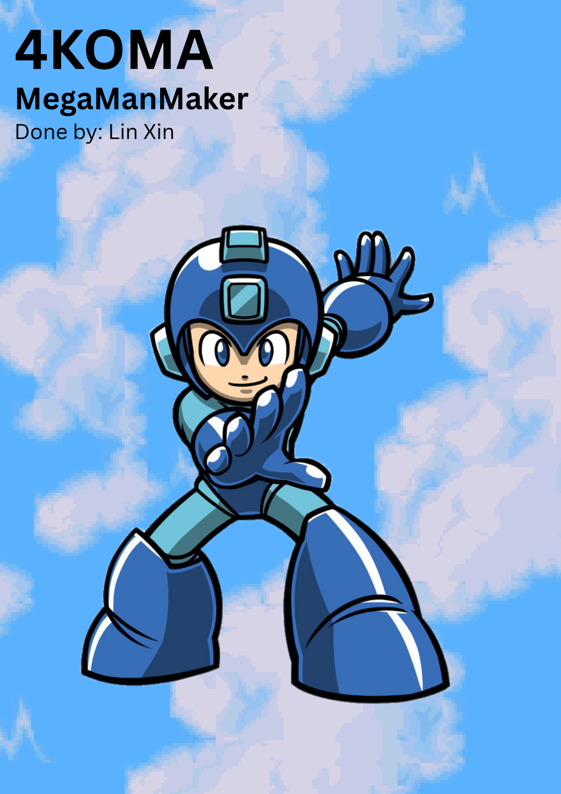

Mega Man Maker. Mobility stage. Two verbs, getting stricter.
I wanted a stage that gets harder because the player gets better at the same tools, not because I keep adding weapons. Primary theme is mobility — double jump and slide. Secondary is timing. Every labelled challenge has to ask for at least one of those verbs, often stacked. If a room cannot be named in that language, it does not belong on the map.
Difficulty over complexity. That is the brief I wrote for myself, and it is the opposite of the puzzle stage in this set. Two verbs is enough if the ask on them keeps climbing. Adding a third tool would have made later rooms look harder on paper while teaching less about the ones the stage is actually about.
Slide and double jump normally cannot coexist. Equipping a unique attack unlocks both. That constraint became the hook: air slides, and one-block midair gaps that need a double jump plus a timed air slide. The gimmick is already in the editor once those two tools exist together. I did not invent a new mechanic. I forced a pairing the game usually forbids, then wrote rooms that only make sense because of that pairing.
I notate rooms the way I notate Mega Man cadence, then I build to that table. The alphabet is the design before the tiles.
| Code | Verb |
|---|---|
| A / A' | Jump / spring jump |
| B / B' / B'' | Double jump / place both jumps to avoid damage / jump, other action, jump |
| C / C' | Slide / air slide |
| D | Timed jump |
| E | Breaking platform with a limited window |
Fourteen challenges across five screens. Intensity is scored per zone, not guessed after play.
| Screen | Beat | Peak intensity |
|---|---|---|
| 1 | Teach A, B, C alone, then B' and A+C' | 5 |
| 2 | Stacks with timing (B'+C'+D) | 6 |
| 3 | Zone 10: B+C'+D+E — mobility, air slide, timing, a platform that will not wait | 8 |
| 4 | Fork: B+E or C+E | 6 |
| 5 | B+C' — the cleanest statement of the theme | 10 |
Early rooms sit at 1–3. The first real spike is A+C' at 5. I then drop to a 1 (just B) so the player can reset before the next stack. Mid-map climbs through 4, 6, 8. The last screen is the exam, not a new toy. Downbeats are deliberate: without them, stacking the same two verbs just reads as cheap.
Screen 4's fork is the one place the stage offers a choice inside the theme. Both paths still speak B/C and E. The freedom is which verb carries the breaking platform, not whether you can leave the alphabet.
Level document (map, cadence, intensity)
Set Mega Man Maker — all three stages. FIVENITE — easy combat. Prison Break — normal puzzle.
Questions soniclinxin@gmail.com · LinkedIn